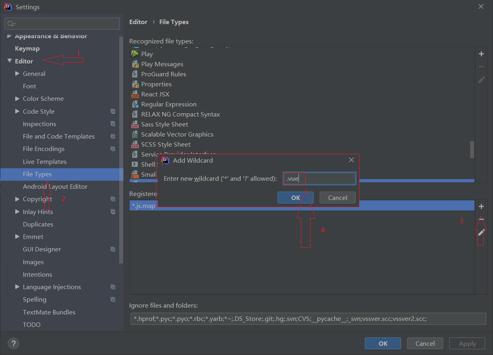
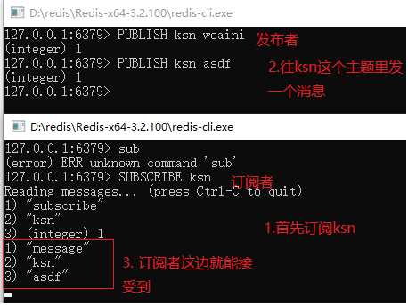

- 查看node版本号： node -v
- 查看node安装路径： where node
安装阿里镜像和vue-cli
- 安装镜像： npm i -g cnpm --registry=https:
-
安装cli：
npm i -g vue-cli //这个是安装命令 vue -V //测试是否安装成功：
- 1.安装vue.js插件
- 2.配置HTML支持.vue后缀的文件。
- 
- 3.配置ECMAScript6


- 然后点击+号，找到npm

使用的是@RequestBody 和@RequestMapping这两个注解, 设置@RequestBody, 返回参数是json
使用@RequestMapping，这是 springMVC的写法，@RequestMapping("aa"),这个aa就相当于servlet中的action， 在里面设置
produces="application/json;charset=utf-8"可以把Content-Typeh设置成这个，解决前台拿数据 乱码问题
1. 现在input输入框中绑定一个 值发生改变就出发的事件 @keyup.native = "aa"
2.
methods: {
// 验证只能输入正整数
aa(){
this.single_bet_min.value=this.single_bet_min.value.replace(/[^\.\d]/g,'');
this.single_bet_min.value=this.single_bet_min.value.replace('.','');
}
@CrossOrigin(origins = "*", maxAge = 3600)
安装阿里镜像和vue-cli
安装cli：
npm i -g vue-cli //这个是安装命令
vue -V //测试是否安装成功：


在mian.js入口函数中引入
import Vuex from "vuex"
Vue.use(Vuex)
然后建立一个仓库
var store = new Vuex.Store({
state: { //用来存储数据
totalconunt: 1
},
mutations: { //这里面的放啊是用来修改上面属性中的数据的
updateconunt(state, arg) {
state.totalcount = arg
}
}
});
然后要在vue对象中绑定
var vue = new Vue({
el: '#app',
data: {},
store: store //可以简写成store
})

2.在web下建一个web工程的启动类MyServletInitializer，相当于disparcatchServlet
//1.继承下面这个类，实现下面的三个方法
public class MyServletInitializer extends AbstractAnnotationConfigDispatcherServletInitializer {
@Override
protected Class<?>[] getRootConfigClasses() {
//这个相当于application.xml，是大容器
return new Class[]{MyRootConfig.class};
}
@Override
protected Class<?>[] getServletConfigClasses() {
//这个相当于springmvc.xml，是小容器，
return new Class[]{MyServletConfig.class};
}
@Override
protected String[] getServletMappings() {
//这个就是拦截所有请求，相当于disparcatchServlet
return new String[]{"/"};
}
}
大容器需要的注解
@Configuration //标名这是一个配置类
@ComponentScan(basePackages = "com.hnguigu") //扫描这里的包
@MapperScan(basePackages = "com.hnguigu.mapper")//扫描mapper
@PropertySource(value = "classpath:jdbc.properties")//读jdbc配置文件
@EnableTransactionManagement //事务相关
然后就是把数据源，MybatisSqlSessionFactoryBean， DataSourceTransactionManager加入ioc容器
@Bean
public DataSource getDataSource() {
DruidDataSource dataSource = new DruidDataSource();
dataSource.setDriverClassName(driver);
dataSource.setUrl(url);
dataSource.setUsername(username);
dataSource.setPassword(password);
return dataSource;
}
@Bean
public MybatisSqlSessionFactoryBean getMybatisSqlSessionFactoryBean(DataSource dataSource) {
Resource resource = new ClassPathResource("myBatis-config.xml");
MybatisSqlSessionFactoryBean factoryBean = new MybatisSqlSessionFactoryBean();
factoryBean.setDataSource(dataSource);
factoryBean.setConfigLocation(resource);
return factoryBean;
}
@Bean
public DataSourceTransactionManager getDataSourceTransactionManager(DataSource dataSource) {
DataSourceTransactionManager transactionManager = new DataSourceTransactionManager();
transactionManager.setDataSource(dataSource);
return transactionManager;
}
小容器需要的注解
@Configuration
@ComponentScan(basePackages = "com.hnguigu.web.controller")
@EnableWebMvc
配置视图解析器，静态资源过滤器，拦截器， 异常处理解析器，文件上传解析器
public class MyServletConfig extends WebMvcConfigurerAdapter {//先继承这个类
//public class MyServletConfig implements WebMvcConfigurer {
//视图解析器
@Override
public void configureViewResolvers(ViewResolverRegistry registry) {
registry.jsp("/WEB-INF/pages", ".jsp");
}
//静态资源过滤器
@Override
public void addResourceHandlers(ResourceHandlerRegistry registry) {
registry.addResourceHandler("/js/**").addResourceLocations("/js/");
registry.addResourceHandler("/css/**").addResourceLocations("/css/");
}
//拦截器
@Override
public void addInterceptors(InterceptorRegistry registry) {
registry.addInterceptor(new HandleInterceptor3())
.addPathPatterns("/**")
.excludePathPatterns("/Replydetail/*");
}
//异常处理解析器
@Override
public void configureHandlerExceptionResolvers(List<HandlerExceptionResolver> exceptionResolvers) {
exceptionResolvers.add(new CostomExceptionHandle());
}
//文件上传解析器
public CommonsMultipartResolver commonsMultipartResolver() {
CommonsMultipartResolver commonsMultipartResolver = new CommonsMultipartResolver();
commonsMultipartResolver.setDefaultEncoding("utf-8");
commonsMultipartResolver.setMaxUploadSize(8388608);
commonsMultipartResolver.setMaxUploadSizePerFile(3145728);
return commonsMultipartResolver;
}
}

<dependency>
<groupId>org.springframework.boot</groupId>
<artifactId>spring-boot-devtools</artifactId>
<optional>true</optional>
<plugins>
<plugin>
<groupId>org.apache.maven.plugins</groupId>
<artifactId>maven-site-plugin</artifactId>
<configuration>
<locales>en,fr</locales>
</configuration>
</plugin>
</plugins>
<dependency>
<groupId>org.springframework.boot</groupId>
<artifactId>spring-boot-devtools</artifactId>
<scope>runtime</scope>
<optional>true</optional>
</dependency>
使用 @ControllerAdvice 实现全局异常处理，只需要定义类，添加该注解即可定义方式如下：
@ControllerAdvice
public class MyGlobalExceptionHandler {
@ExceptionHandler(Exception.class)
public ModelAndView customException(Exception e) {
ModelAndView mv = new ModelAndView();
mv.addObject("message", e.getMessage());
mv.setViewName("myerror");
return mv;
}
}
@ExceptionHandler 注解用来指明异常的处理类型，即如果这里指定为 NullpointerException，则数组越界异常就不会进到这个方法中来。
使用步骤，首先定义全局数据，如下：
@ControllerAdvice
public class MyGlobalExceptionHandler {
@ModelAttribute(name = "md")
public Map<String,Object> mydata() {
HashMap<String, Object> map = new HashMap<>();
map.put("age", 99);
map.put("gender", "男");
return map;
}
}
定义完成后，在任何一个Controller 的接口中，都可以获取到这里定义的数据：
@RestController
public class HelloController {
@GetMapping("/hello")
public String hello(Model model) {
Map<String, Object> map = model.asMap();
System.out.println(map);
int i = 1 / 0;
return "hello controller advice";
}
}

const path = require('path')
const debug = process.env.NODE_ENV !== 'production'
module.exports = {
publicPath: process.env.NODE_ENV === 'production' ? './' : '/', // 根域上下文目录
outputDir: 'dist', // 构建输出目录
assetsDir: 'assets', // 静态资源目录 (js, css, img, fonts)
lintOnSave: false, // 是否开启eslint保存检测，有效值：ture | false | error
runtimeCompiler: true, // 运行时版本是否需要编译
transpileDependencies: [], // 默认babel-loader忽略mode_modules，这里可增加例外的依赖包名
productionSourceMap: false, // 是否在构建生产包时生成 sourceMap 文件，false将提高构建速度
configureWebpack: config => { // webpack配置，值位对象时会合并配置，为方法时会改写配置
if (debug) { // 开发环境配置
config.devtool = 'cheap-module-eval-source-map'
} else { // 生产环境配置
}
},
devServer: {
open: true, //自动启动浏览器
host: '0.0.0.0',
port: 8081,
https: false,
hotOnly: false, //webpack已经默认开启，这里false
proxy: { // 配置跨域
'/api': {
target: 'http://127.0.0.1:8080/renewal', //打包后接口地址
ws: true,
changOrigin: true,
pathRewrite: {
'^/api': ''
}
}
},
before: app => {}
}
}

然后再跨域过滤器中配置一段代码
HttpServletResponse httpServletResponse = (HttpServletResponse) response;
HttpServletRequest httpServletRequest = (HttpServletRequest) request;
httpServletResponse.setHeader("Access-control-Allow-Origin", httpServletRequest.getHeader("Origin")); //标识允许哪个域到请求，直接修改成请求头的域
httpServletResponse.setHeader("Access-Control-Allow-Methods", "GET,POST,OPTIONS,PUT,DELETE");//标识允许的请求方法
// 响应首部 Access-Control-Allow-Headers 用于 preflight request （预检请求）中，列出了将会在正式请求的 Access-Control-Expose-Headers 字段中出现的首部信息。修改为请求首部
httpServletResponse.setHeader("Access-Control-Allow-Headers", httpServletRequest.getHeader("Access-Control-Request-Headers"));
httpServletResponse.setContentType("application/json;charset=utf-8");
//这句是允许接受跨域cookie设置，因为shiro是根据jsessionid作为用户的唯一标识
httpServletResponse.setHeader("Access-Control-Allow-Credentials", "true");
chain.doFilter(request, httpServletResponse);
nginx配置文件
server {
listen 8082; //前端端口
server_name localhost;
charset utf-8; #设置编码为utf-8
location / {
add_header 'Access-Control-Allow-Origin' '*' always;
add_header 'Access-Control-Allow-Credentials' 'true' always;
add_header 'Access-Control-Allow-Methods' 'GET, POST, OPTIONS' always;
add_header 'Access-Control-Allow-Headers' 'DNT,X-CustomHeader,Keep-Alive,User-Agent,X-Requested-With,If-Modified-Since,Cache-Control,Content-Type' always;
root F:\idea-workspace\Shiro\ssm+shiro+vue\ssm+shiro_vue\shiro_vue\dist;
index index.html index.htm;
}
location /user/ {
add_header 'Access-Control-Allow-Origin' '*' always;
add_header 'Access-Control-Allow-Credentials' 'true' always;
add_header 'Access-Control-Allow-Methods' 'GET, POST, OPTIONS' always;
add_header 'Access-Control-Allow-Headers' 'DNT,X-CustomHeader,Keep-Alive,User-Agent,X-Requested-With,If-Modified-Since,Cache-Control,Content-Type' always;
proxy_pass http://127.0.0.1:8080; # 后端接口 IP:port
}
error_page 500 502 503 504 /50x.html;
location = /50x.html {
root html;
}
}
1.导入key
rpm --import https://www.elrepo.org/RPM-GPG-KEY-elrepo.org, 如果报SSL错误, 则需要更新网络安全服务 yum update nss
2.安装elrepo的yum源
到该http://elrepo.org/tiki/tiki-index.php网址找到最新的包, 执行
rpm -Uvh https://www.elrepo.org/elrepo-release-6-8.el6.elrepo.noarch.rpm
3.安装内核
yum --enablerepo=elrepo-kernel install kernel-lt -y
4. 最后修改引导文件,将默认引导改为0
vim /etc/grub.conf 将default改成0, 如果原来是0,则改成1.
5 最最后 reboot一下, 然后再用uname -a 查看一下内核版本就可以了!!!!!!!!!!!!!!!!!
解决方法： 一句话：把/etc/yum.repos.d/epel.repo，文件第3行注释去掉，把第四行注释掉。具体如下：
打开/etc/yum.repos.d/epel.repo，将
[epel]
name=Extra Packages for Enterprise Linux 6 - $basearch
#baseurl=http://download.fedoraproject.org/pub/epel/6/$basearch
mirrorlist=https://mirrors.fedoraproject.org/metalink?repo=epel-6&arch=$basearch
修改为
[epel]
name=Extra Packages for Enterprise Linux 6 - $basearch
baseurl=http://download.fedoraproject.org/pub/epel/6/$basearch
#mirrorlist=https://mirrors.fedoraproject.org/metalink?repo=epel-6&arch=$basearch
再清理源，重新安装
yum clean all
yum install -y 需要的包
输入命令，然后重启
命令：yum install device-mapper-event-libs
重启：/etc/init.d/docker restart

执行 MySQL shell 命令查看服务器的版本：
命令：select version();
执行结果：
| version() |
+-----------+
| 8.0.16 |
+-----------+
1 row in set (0.00 sec)
查看当前默认的密码认证插件：
命令： show variables like 'default_authentication_plugin';
| Variable_name | Value |
+-------------------------------+-----------------------+
| default_authentication_plugin | caching_sha2_password |
+-------------------------------+-----------------------+
1 row in set (0.01 sec)
查看当前所有用户绑定的认证插件：
命令 select host,user,plugin from mysql.user;
+-----------+------------------+-----------------------+
| host | user | plugin |
+-----------+------------------+-----------------------+
| % | root | caching_sha2_password |
| localhost | healthchecker | caching_sha2_password |
| localhost | mysql.infoschema | caching_sha2_password |
| localhost | mysql.session | caching_sha2_password |
| localhost | mysql.sys | caching_sha2_password |
+-----------+------------------+-----------------------+
5 rows in set (0.00 sec)
假如想更改 root 用户的认证方式
# 修改加密规则
> ALTER USER 'root'@'%' IDENTIFIED BY 'root' PASSWORD EXPIRE NEVER;
# 更新用户密码
> ALTER USER 'root'@'%' IDENTIFIED WITH mysql_native_password BY '123456';
# 赋予 root 用户最高权限
> grant all privileges on *.* to root@'%' with grant option;
# 刷新权限
> flush privileges;
注意：在这之后，将不再支持以下的权限授予语句：
grant all privileges on . to root@'%' identified by '123456' with grant option;
spring.datasource.initialization-mode=always


主要命令
docker run --name mynginx -d -p 80:80
-v /data/nginx/html:/usr/share/nginx/html
-v /data/nginx/conf/nginx.conf:/etc/nginx/nginx.conf
-v /data/nginx/conf.d/default.conf:/etc/nginx/conf.d/default.conf
-v /data/nginx/logs:/var/log/nginx
nginx
把本地的/data/nginx下的各个文件挂载到nginx上
server:
port: 8001 #端口号
spring:
application:
name: cloud-payment-service # 服务名称
datasource:
type: com.alibaba.druid.pool.DruidDataSource
url: jdbc:mysql://localhost:3306/guigu?useUnicode=true&characterEncoding=UTF-8&useSSL=false&serverTimezone=GMT%2B8
password: root
username: root
driver-class-name: com.mysql.cj.jdbc.Driver
整合mybatis(配置这个即可开始使用)
#mybatis:
# mapper-locations: classpath:mapper/*.xml
# type-aliases-package: com.hnguigu.springcloud.domain # 实体类所在包名， 会用包名简单映射
整合mybatis-plus()
# mybatis-plus相关配置
mybatis-plus:
# xml扫描，多个目录用逗号或者分号分隔（告诉 Mapper 所对应的 XML 文件位置）
mapper-locations: classpath:mapper/*.xml
# 以下配置均有默认值,可以不设置
global-config:
db-config:
#主键类型 AUTO:"数据库ID自增" INPUT:"用户输入ID",ID_WORKER:"全局唯一ID (数字类型唯一ID)", UUID:"全局唯一ID UUID";
id-type: auto
#字段策略 IGNORED:"忽略判断" NOT_NULL:"非 NULL 判断") NOT_EMPTY:"非空判断"
field-strategy: NOT_EMPTY
#数据库类型
db-type: MYSQL
configuration:
# 是否开启自动驼峰命名规则映射:从数据库列名到Java属性驼峰命名的类似映射
map-underscore-to-camel-case: true
# 如果查询结果中包含空值的列，则 MyBatis 在映射的时候，不会映射这个字段
call-setters-on-nulls: true
# 这个配置会将执行的sql打印出来，在开发或测试的时候可以用
log-impl: org.apache.ibatis.logging.stdout.StdOutImpl

编写配置类
@Configuration
public class MybatisPlusConfig {
@Bean
public PaginationInterceptor paginationInterceptor() {
return new PaginationInterceptor();
}
}
<dependency>
<groupId>org.springframework.boot</groupId>
<artifactId>spring-boot-starter-web</artifactId>
</dependency>
@Configuration
public class ApplicattionContextConfig {
@Bean
public RestTemplate getRestTemplate() {
return new RestTemplate();
}
}
public static final String URL = "http://localhost:8001";
@Resource
private RestTemplate restTemplate;
@GetMapping("/payment/add")
public CommonReault<Payment> add(Payment payment) {
// 三个参数分别是， 要远程调用的url地址， 第二个是参数， 第三个是返回值类型
return restTemplate.postForObject(URL + "/payment/payment", payment, CommonReault.class);
}
vi /etc/sysconfig/network-scripts/ifcfg-ens33
然后重启
service network restart
yum install net-tools
(wget没有的话执行以下命令)
yum -y install wget
yum -y install setup
yum -y install perl
uname -a
yum update
yum install -y yum-utils device-mapper-persistent-data lvm2
yum-config-manager --add-repo http://download.docker.com/linux/centos/docker-ce.repo（中央仓库）
yum-config-manager --add-repo http://mirrors.aliyun.com/docker-ce/linux/centos/docker-ce.repo（阿里仓库）
yum list docker-ce --showduplicates | sort -r
yum install docker-ce-18.03.1.ce
systemctl start docker
1. 下载好.zip后缀的文件后使用解压：
unzip elasticsearch.zip -d ik
2. 然后把ik文件夹传到容器内部
docker cp ik 容器名:地址(例如: docker cp ik elasticsearch:/usr/share/elasticsearch/plugins)
3. 重启elasticsearch容器，然后在kibana中测试，ik分词器中包括了ik_smart和ik_max_word两种
GET _analyze
{
"analyzer": "ik_smart",
"text": "这是一个对分词器的测试"
}
区别：
ik_max_word：这是/一个/一/个/对分/分词器/分词/词/器/测试
ik_smart：这是/一个/分词器/测试
standard：这/是/一/个/对/分/词/器/的/测/试

解决方法：
IPage<InsuranceServiceApplyInfoVo> insuranceServiceApplyInfoVoIPage = provider.selectPageVo(pageVo);
insuranceServiceApplyInfoVoIPage.getRecords().stream().forEach(item -> {
if (null != item.getInsuranceProductInfoVo()) {
item.setInsuranceProductInfoVo(new InsuranceProductInfoVo(item.getInsuranceProductInfoVo()));
}
});
return provider.selectPageVo(pageVo);
把可能会出现重复对象的对象重新new一遍，就不会使它们的引用地址指向同一个对象了，然后再vo类中添加一个新的构造方法即可
location ~ .*\.(gif|jpg|jpeg|png)$ {
expires 24h;
root /home/hy/nginx_download/user/img;#指定图片存放路径
access_log /home/hy/nginx_download/logs/images.log;#日志存放路径
proxy_store on;
proxy_store_access user:rw group:rw all:rw;
proxy_temp_path /home/hy/nginx_download/user/img;#图片访问路径
proxy_redirect off;
proxy_set_header Host 127.0.0.1;
client_max_body_size 10m;
client_body_buffer_size 1280k;
proxy_connect_timeout 900;
proxy_send_timeout 900;
proxy_read_timeout 900;
proxy_buffer_size 40k;
proxy_buffers 40 320k;
proxy_busy_buffers_size 640k;
proxy_temp_file_write_size 640k;
if ( !-e $request_filename)
{
proxy_pass http://127.0.0.1;#默认80端口
}
}
location /model {
charset utf-8;
root /home/hy/nginx_download/user; #配置下载文件的路径
#alias /data/download/;
// 下载文件后缀为txt的
if ($request_filename ~* ^.*?\.(txt)$){
add_header Content-Disposition 'attachment';
add_header Content-Type: 'APPLICATION/OCTET-STREAM';
}
autoindex on; // 打开目录浏览功能，为on则会显示文件列表，为off就显示403
autoindex_exact_size off; // 显示文件大小
autoindex_localtime on; // 显示文件时间
// 记录日志的地方，main表示使用默认的日志模板，可以使用log_format自定义模板
access_log /home/hy/nginx_download/logs/download.log main;
}

ssh-keygen -t rsa "邮箱" //然后一直按回车就行
公钥内容在 ~/.ssh/id_rsa.pub
私有内容在 ~/.ssh/id_rsa

maven中最好指定一下jdk的版本(在setting中配置)
<profile>
<id>jdk-1.8</id>
<activation>
<activeByDefault>true</activeByDefault>
<jdk>1.8</jdk>
</activation>
<properties>
<maven.compiler.source>1.8</maven.compiler.source>
<maven.compiler.target>1.8</maven.compiler.target>
<maven.compiler.compilerVersion>1.8</maven.compiler.compilerVersion>
</properties>
</profile>
ps -ef | grep Test1-1.0-SNAPSHOT.jar | grep -v grep | awk '{print $2}'
ps -ef | grep Test1-1.0-SNAPSHOT.jar
grep -v grep: grep -v是反向查找，grep是查找包含指定字符串的行，结合起来就是查找不包含指定字符串的行，比如这个就是查找不包含grep的行
awk '{print $2}'： 就是把字段文本根据空格或tab拆分，取第2段文本
public class ScheduledExecutorTimeTaskService {
private int a = 0;
private ScheduledExecutorService scheduledExecutorService = Executors.newScheduledThreadPool(3);
/**
* 延时2s开始执行
*/
public void task1() {
scheduledExecutorService.schedule(() -> {
log.info("task-start");
try {
TimeUnit.SECONDS.sleep(5);
} catch (InterruptedException e) {
e.printStackTrace();
}
log.info("task-end");
}, 3, TimeUnit.SECONDS);
}
/**
* 间隔多久执行方法
* @param a1 首次执行延迟多久
* @param a2 每次执行间隔多久
*/
public void task2(int a1, int a2) {
scheduledExecutorService.scheduleAtFixedRate(() -> {
log.info("task-start");
try {
TimeUnit.SECONDS.sleep(1);
} catch (InterruptedException e) {
e.printStackTrace();
}
a++;
System.out.println(a);
if (a > 5) {
scheduledExecutorService.shutdown();
}
log.info("task-end");
}, a1,a2, TimeUnit.SECONDS);
}
/**
* 间隔多久执行方法, 跟task2作用差不多
* 差别就是：
* scheduleWithFixedDelay： 是以上一个任务执行完后才开始计算间隔时间
* scheduleAtFixedRate： 是当上一个任务开始执行的时候就计算间隔时间，上一个任务完成后立即执行下一个任务，没有完成则等待
* @param a1 首次执行延迟多久
* @param a2 每次执行间隔多久
*/
public void task3(int a1, int a2) {
scheduledExecutorService.scheduleWithFixedDelay(() -> {
log.info("task-start");
try {
TimeUnit.SECONDS.sleep(1);
} catch (InterruptedException e) {
e.printStackTrace();
}
log.info("task-end");
}, a1, a2, TimeUnit.SECONDS);
}
}
@EnableScheduling
@SpringBootApplication
public class TestApplication {
public static void main(String[] args) {
SpringApplication.run(TestApplication.class, args);
}
}
public class ScheduledAnnotationTimeTaskService {
/**
* 每隔2s执行一次，如果上次任务超过2s则上次任务结束后马上下一次任务，
*/
@Scheduled(initialDelay=5000, fixedRate = 4000)
public void task1() {
log.info("task-start1");
sleep(1);
log.info("task-end1");
}
/**
* initialDelay: 首次任务执行延迟的时间
* fixedRate： 它的间隔2s是以上一个任务开始执行开始计算，
* fixedDelay： 它的间隔2s是等上一次任务执行完了等2s再执行下一个任务
*/
@Scheduled(initialDelay=5000, fixedDelay = 4000)
public void task2() {
log.info("task-start2");
sleep(1);
log.info("task-end2");
}
@Scheduled(cron = "0/3 * * * * ?")
public void task3() {
log.info("task-start3");
sleep(1);
log.info("task-end3");
}
public static void sleep(int a) {
try {
TimeUnit.SECONDS.sleep(a);
} catch (InterruptedException e) {
e.printStackTrace();
}
}
}
<dependency>
<groupId>org.springframework.boot</groupId>
<artifactId>spring-boot-starter-quartz</artifactId>
<version>2.3.2.RELEASE</version>
</dependency>
修改<Server port="8005" shutdown="SHUTDOWN"> 关闭通信的端口
<Connector port="8009" protocol="AJP/1.3" redirectPort="8443"/> 与其他服务器通信的端口，如集群
<Connector connectionTimeout="20000" port="8080" protocol="HTTP/1.1" redirectPort="8443"/> 用于监听浏览器发送的请求
把war包的名字改成ROOT.war即可
delimiter $$ -- 表示暂时用$$代替；，免得mysql命令行认为；是结束符号
create procedure test1()
begin
select * from book;
end;
call test1()
create procedure test1()
begin
declare username varchar(36) default 'asdf'; -- 声明变量username
set username '1111'; -- 给username 设置值
select price into username from book where id = 7;
select username; -- 查询username的值
end
drop procedure test1;
create procedure test2(bookId int)
begin
declare username varchar(36) default 'asdf';
select book_name into username from book where id = bookId;
select username;
end
调用
call test2(3)
create procedure test3(in bookId int, out bookName varchar(36))
begin
select book_name into bookName from book where id = bookId;
end
调用
set @bookName = '';
call test3(4, @bookName);
select @bookName as bookName;
CREATE DEFINER=`root`@`localhost` PROCEDURE `test4`(inout bookId int, inout bookName varchar(36))
BEGIN
#Routine body goes here...
set bookName = 'test1';
update book set book_name = 'asdf' where id = bookId;
select bookName;
END
调用
set @bookId = '3';
set @bookName = 'tes';
call test4(@bookId, @bookName);
select @bookName as bookName;
if() then...else...end if;
if() then...
elseif() then...
else...
end if;
CREATE DEFINER=`root`@`localhost` PROCEDURE `test5`(in bookId int)
BEGIN
#Routine body goes here...
declare username varchar(36) default '';
if (bookId%2=0)
then
select id from book where id = bookId;
else
select book_name into username from book where id = bookId;
select username;
end if;
END
CREATE DEFINER=`root`@`localhost` PROCEDURE `test6`(in bookId int)
BEGIN
#Routine body goes here...
if(bookId = 1)
then
select 'asdf1';
elseif(bookId = 2)
then
select 'asdf2';
else
select 'asdf3';
end if;
END
调用
call test5(2)
call test6(2)
while() do
...
end while;
CREATE DEFINER=`root`@`localhost` PROCEDURE `whilecirc`()
BEGIN
#Routine body goes here...
declare i int default 11;
begin
while(i<20) do
set i = i+1;
insert into book values(i,'bookname','au',200 +i,'pe');
end while;
END;
END
repeat...until...end repeat;
CREATE DEFINER=`root`@`localhost` PROCEDURE `repeatcirc`()
BEGIN
#Routine body goes here...
declare i int default 0;
select count(*) into i from book;
repeat
begin
set i = i - 1;
delete from book where id = i;
end;
until i < 20
end repeat;
END
CREATE DEFINER=`pcspsit`@`%` PROCEDURE `statistic`()
BEGIN
#Routine body goes here...
declare circulationTotal varchar(36) default '0'; -- 循环次数
declare exist int default 0; -- 是否存在
declare total varchar(36) default '0'; -- 总数
declare optionTotle varchar(36) default '0'; -- 总选择数
declare optionStopFlag int default 0; -- 选项循环的停止标识
declare questionStopFlag int default 0; -- 题目循环的停止标识
declare optionId varchar(36) default ''; -- 选项id
declare questionId varchar(36) default ''; -- 题目id
-- 创建一个游标，就是一个临时存储区，存在question_cur中
declare question_cur cursor for select id from pcsp_aeo_question_info where DELETED = 0 and INVALID = 0;
-- 当游标执行完后吧questionStopFlag设置成1
declare continue handler for not found set questionStopFlag = 1;
open question_cur; -- 打开游标
-- 让游标往下走一次，吧变量放在questionId中
fetch question_cur into questionId;
tt:while (questionStopFlag = 0) do -- 循环游标结果集，设置循环的名字为tt
begin
declare option_cur cursor for select id from pcsp_sys_dictionary where DELETED = 0 and INVALID = 0 and DICTIONARY_SUBJECT_ID = '1341701547234778081';
declare continue handler for not found set optionStopFlag = 5;
open option_cur;
fetch option_cur into optionId;
while (optionStopFlag < 5) do
begin
-- 总数
SELECT
count(1) into total
FROM
pcsp_aeo_evaluate_record_info eri
INNER JOIN pcsp_aeo_evaluate_result_detail_info rdi ON eri.id = rdi.EVALUATE_RECORD_ID
WHERE
eri.DELETED = 0
AND eri.INVALID = 0
AND rdi.OPTION_ID = optionId;
-- 选项总数
SELECT
count(1) into optionTotle
FROM
pcsp_aeo_evaluate_record_info eri
INNER JOIN pcsp_aeo_evaluate_result_detail_info rdi ON eri.id = rdi.EVALUATE_RECORD_ID
WHERE
eri.DELETED = 0
AND eri.INVALID = 0
AND rdi.OPTION_ID = optionId
AND rdi.QUESTION_ID = questionId;
select ID into exist from pcsp_aeo_statistics_info where OPTION_ID = optionId and QUESTION_ID = questionId;
if (exist = 0)
then
insert into pcsp_aeo_statistics_info values(null, total, optionTotle, optionId, questionId, concat(optionTotle/total * 100, '%'));
else
update pcsp_aeo_statistics_info set TOTAL=total, CHOOSE_NUM=optionTotle, RATE=concat((truncate(optionTotle/total,2)) * 100, '%') where ID = exist;
end if;
fetch option_cur into optionId;
set optionStopFlag = optionStopFlag + 1;
end;
end while;
close option_cur;
set circulationTotal = circulationTotal + 1;
if (circulationTotal < 6)
then
set optionStopFlag = 0;
else
LEAVE tt; -- 跳出循环
end if;
fetch question_cur into questionId;
end;
end while;
close question_cur; -- 关闭游标
END
public synchronized Throwable getCause() {
return (cause==this ? null : cause);
}
当cause等于本身时就等于null否则才返回cause
public class Throwable$getCauseTest {
public static void main(String[] args) {
getCause1();
getCause2();
}
public static void getCause1() {
try {
throw new RuntimeException("main error!");
} catch (Exception e) {
System.out.println(e.getCause() instanceof RuntimeException);
System.out.println("e：" + e + "; e.getCause()：" + e.getCause());
}
}
public static void getCause2() {
Runnable r1 = () -> {
throw new RuntimeException("Thread error!");
};
Future<Integer> task = Executors.newSingleThreadExecutor().submit(r1, 1);
try {
task.get();
} catch (Exception e) {
System.out.println(e.getCause() instanceof RuntimeException);
System.out.println("e：" + e + "; e.getCause()：" + e.getCause());
}
}
}
// 输出结果
false
e：java.lang.RuntimeException: main error!; e.getCause()：null
true
e：java.util.concurrent.ExecutionException: java.lang.RuntimeException: Thread error!;
e.getCause()：java.lang.RuntimeException: Thread error!
#!/bin/bash
echo "hello" >> a.txt
chmod 777 test.sh
crontab -e // 编辑定时任务，例如 */1 * * * * /root/test.sh,表示每分钟执行一次这个脚本
systemctl restart crond.service
systemctl status crond.service // 查看crontab的状态
systemctl stop crond.service // 停止crontab
crontab -l // 查看定时任务列表
@SqlParser(filter-true)
# 开启 SQL 解析缓存注解生效
mybatis-plus:
global-config:
sql-parser-cache: true


fireLifecycleEvent(CONFIGURE_START_EVENT, null);这就是对某一类型事件的触发。


正数：r = 20 << 2
20的二进制补码： 0001 0100
向左移动两位后： 0101 0000
结果：r = 80
负数：r = -20 << 2
-20 的二进制原码 ：1001 0100
-20 的二进制反码 ：1110 1011
-20 的二进制补码 ：1110 1100
左移两位后的补码：1011 0000
反码：1010 1111
原码：1101 0000
结果：r = -80
正数：r = 20 >> 2
20的二进制补码：0001 0100
向右移动两位后：0000 0101
结果：r = 5
负数：r = -20 >> 2
-20 的二进制原码 ：1001 0100
-20 的二进制反码 ：1110 1011
-20 的二进制补码 ：1110 1100
右移两位后的补码：1111 1011
反码：1111 1010
原码：1000 0101
结果：r = -5
正数： r = 20 >>> 2
的结果与 r = 20 >> 2 相同；
负数： r = -20 >>> 2
注：以下数据类型默认为int 32位
-20:源码：10000000 00000000 00000000 00010100
反码：11111111 11111111 11111111 11101011
补码：11111111 11111111 11111111 11101100
右移：00111111 11111111 11111111 11111011
结果：r = 1073741819
7的二进制就是111
-7转化二进制的过程:
(1)把-7转化成7，二进制是 111
(2)Java中对于不满32位的int二进制自动补齐，所以变成了 (29个0)111
(3)然后取反 (29个1)000
(4)然后加1 (29个1)001
在nginx中配置一个server拦截80请求，然后转换成443的https
server {
listen 80;
server_name www.xxx.com
return 301 https://$host/$request_uri;
}
/**
* 模拟公众号文章推送，观察目标是栈长我，观察者是你们大家，我发布一篇文章，你们都能接收到更新通知并能阅读。
*
* @author ksn
* @version 1.0
* @date 2021/4/15 9:13
*/
public class ObServerTest extends Observable {
public String name;
public void publish(String msg) {
// 发布文章
this.name = msg;
System.out.println("发布文章：" + msg);
// 改变状态
this.setChanged();
// 通知观察者们
this.notifyObservers("hahahhaha");
}
public static void main(String[] args) {
ObServerTest obServerTest = new ObServerTest();
ReaderObserver readerObserver = new ReaderObserver();
// 加 到观察者列表
obServerTest.addObserver(readerObserver);
// 发布更新
obServerTest.publish("a文章");
}
}
public class ReaderObserver implements Observer {
@Override
public void update(Observable o, Object arg) {
ObServerTest o1 = (ObServerTest) o;
System.out.println("Observable对象：" + o1.name);
System.out.println("arg对象：" + arg);
System.out.println("我是读者， 我已收到更新");
}
}
发布文章：a文章
Observable对象：a文章
arg对象：hahahhaha
我是读者， 我已收到更新

notify-keyspace-events Ex)__keyevent@0__:expired
public ClassPathXmlApplicationContext(
String[] configLocations, boolean refresh, @Nullable ApplicationContext parent)
throws BeansException {
super(parent);
setConfigLocations(configLocations);
if (refresh) {
refresh();
}
}
例如：
@Bean("BeanA")
@DependsOn("BeanC")
public void getBeanA() {
System.out.println("BeanA");
}
@Bean("BeanB")
public void getBeanB() {
System.out.println("BeanB");
}
@Bean("BeanC")
@DependsOn("BeanB")
public void getBeanC() {
System.out.println("BeanC");
}
输出结果为：
BeanB
BeanC
BeanA
<build>
<plugins>
<plugin>
<groupId>org.springframework.boot</groupId>
<artifactId>spring-boot-maven-plugin</artifactId>
<executions>
<execution>
<goals>
<goal>repackage</goal>
</goals>
</execution>
</executions>
</plugin>
</plugins>
</build>
或者
<build>
<plugins>
<plugin>
<groupId>org.apache.maven.plugins</groupId>
<artifactId>maven-compiler-plugin</artifactId>
<configuration>
<source>1.8</source>
<target>1.8</target>
</configuration>
</plugin>
<plugin>
<groupId>org.springframework.boot</groupId>
<artifactId>spring-boot-maven-plugin</artifactId>
<version>2.2.2.RELEASE</version>
<configuration>
<!-- main方法的地址 只需要修改这个地址-->
<mainClass>com.ksn.UserApp</mainClass>
</configuration>
<executions>
<execution>
<goals>
<goal>repackage</goal>
</goals>
</execution>
</executions>
</plugin>
</plugins>
</build>
war包跟jar包有所不同，因为是springboot项目，所以打包的时候要在启动类上继承SpringBootServletInitializer这个类，然后实现configure方法。
@SpringBootApplication
@MapperScan(basePackages = "com.ksn.dao")
public class UserApp extends SpringBootServletInitializer {
@Override
protected SpringApplicationBuilder configure(SpringApplicationBuilder builder) {
return builder.sources(UserApp.class);
}
public static void main(String[] args) {
SpringApplication.run(UserApp.class, args);
}
}
在maven中配置
<build>
<plugins>
<plugin>
<groupId>org.apache.maven.plugins</groupId>
<artifactId>maven-war-plugin</artifactId>
<version>2.4</version>
<configuration>
<warName>${artifactId}-${version}</warName>
<failOnMissingWebXml>false</failOnMissingWebXml>
</configuration>
</plugin>
</plugins>
</build>

(第一次请求)跳转到扫码页面准备获取code
https://open.weixin.qq.com/connect/qrconnect?
appid=wxed9954c01bb89b47& // 应用id
redirect_uri=http://guli.shop/api/ucenter/wx/callback& // 重定向地址
response_type=code& // 返回类型为code
scope=snsapi_login& // 固定写法
state=STATE // 非必填
(第二次请求) 使用拿到的code获取access_token
https://api.weixin.qq.com/sns/oauth2/access_token?
appid=wxed9954c01bb89b47&
secret=a7482517235173ddb4083788de60b90e& // 应用的秘钥
code=021GnY1w3Sc9fW29OP2w3UAotO1GnY1G& // 上一步的code
grant_type=authorization_code // 固定写法
(第三次请求)用获取到的access_token拿到用户信息
https://api.weixin.qq.com/sns/userinfo?
access_token=38_zRS5Ou85gDb52ga8h7MuJnd94rw6poIWzpvC3uGvdbCjztDBIjXGyFQoR52yRt3SJb-_crjBbnUA88BSo3GvgEbpThW7_Qy9vzT8sha3Ryk&
openid=o3_SC5wODHnIOiptB658o0GdcUKY // 授权用户唯一标识